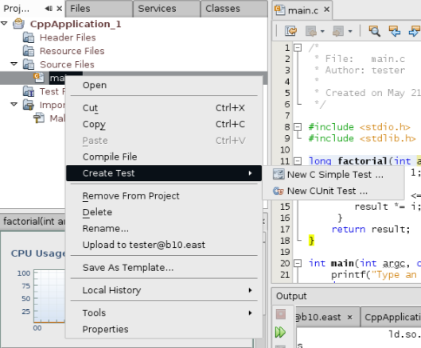

Apache NetBeans
Apache NetBeansLatest release
将单元测试添加到 C 项目 - NetBeans IDE 教程
| This tutorial needs a review. You can edit it in GitHub following these contribution guidelines. |
撰稿人：_Susan Morgan_ 2014 年 3 月 [修订版本号：V8.0-1]
要求
要学习本教程，您需要具备以下软件。
| 软件 | 要求的版本 |
|---|---|
NetBeans IDE（支持 C/C++/Fortran） |
|
Java 开发工具包 (JDK) |
|
CUnit 2.1 测试框架 |
请参见 NetBeans IDE 安装说明和配置 NetBeans IDE 以使用 C/C+/Fortran+， 以获取有关下载并安装所需 NetBeans 软件的信息。
简介
带有 C/C/Fortran 插件的 NetBeans IDE 支持 C/C 项目中的单元测试。可以使用 IDE 创建、运行、调试 C 和 C 测试以及查看这些测试的结果。本文向您演示如何将 IDE 中的单元测试用于 C/C 项目。
使用名为“测试文件”的逻辑文件夹创建一个受管项目，您可在该文件夹中管理该项目的单元测试。可以直接在此“测试文件”文件夹下创建测试，也可以在逻辑子文件夹中组织测试。“测试文件”文件夹中的测试节点是含有测试相关操作的特殊文件夹。构建测试时，它将从项目中排除主文件，并使用所有其他项目设置。
IDE 仅支持 CUnit、CppUnit 及其自己的“简单”输出格式，这意味着您的测试应生成其中某种类型的测试的输出。IDE 提供单元测试的模板：
-
C 简单测试
-
C++ 简单测试
-
CUnit 测试
-
CppUnit 测试
-
CppUnit 测试运行器
本教程在 Ubuntu Linux 上使用 CUnit 测试框架和 NetBeans C 简单测试，不过，演示的技术也可以帮助您在其他平台上进行其他类型的测试。本教程不解释 CUnit 或 CppUnit 测试框架。有关如何使用这些框架的信息，您需要参阅相应文档。
安装 CUnit 测试框架
要遵循本教程，必须先在您的系统上安装 CUnit。有关 CUnit 框架的更多信息，请参见 sourceforge 上的 C 单元测试框架项目。
CUnit 文档包含在 CUnit 下载中，您也可以在 http://cunit.sourceforge.net/doc/index.html 上查看该文档。
请参见相应部分以了解适合于您的平台的安装说明：
如何在 Linux 或 Mac OS 上安装 CUnit
在 Linux 系统上，您应当能够从包资源库中安装 libcunitl、libcunitl-doc 和 libcunitl-dev 包。
在 Mac OS 上，或者在 Linux 上（如果 libcunitl* 包不可用），您可以下载 CUnit 源并构建该源，如此处所述。
以下说明假定您将 CUnit-2.1-2-src.tar.bz2 文件下载到了目录 /tmp 中。如果您的下载文件具有不同的名称，请确保指定实际 CUnit 下载文件和保存该文件的实际目录。
-
从 CUnit 文件页下载 CUnit-2.1-2-src.tar.bz2 源并保存到诸如 /tmp 等临时目录中。
-
在终端窗口中解压缩
CUnit-2.1-2-src.tar.bz2文件，如下所示：
$ cd /tmp
$ bunzip2 CUnit-2.1-2-src.tar.bz2
$ tar -xvf CUnit-2.1-2-src.tar-
从 /tmp 配置、构建和安装 CUinit，如下所示：
$ cd CUnit-2.1-2
$ ./configure --prefix=/usr
$ make
$ sudo make install"make install" 完成后，即可在 IDE 中使用 CUnit 测试框架，并且您可以继续为教程创建项目。
如何在 Oracle Solaris 上安装 CUnit
必须使用 GNU 构建系统构建 CUnit，然后才能使用 CUnit 测试。默认情况下，在 Oracle Solaris 11 系统上，通常不安装 GNU 构建系统。您可以使用以下命令从 Oracle Solaris 11 包资料库中获取 GNU 构建系统组件：
pkg install pkg://solaris/developer/build/gnu-make
pkg install pkg://solaris/developer/build/make
pkg install pkg://solaris/developer/gcc-45
pkg install pkg://solaris/system/header
pkg install pkg://solaris/developer/build/autoconf
pkg install pkg://solaris/developer/build/automake-110以下说明假定您将 CUnit-2.1-2-src.tar.bz2 文件下载到了目录 /tmp 中。如果您的下载文件具有不同的名称，请确保指定实际 CUnit 下载文件和保存该文件的实际目录。
-
从 CUnit 文件页下载 CUnit-2.1-2-src.tar.bz2 源并保存到诸如 /tmp 等临时目录中。
-
在终端窗口中解压缩
CUnit-2.1-2-src.tar.bz2文件，如下所示：
$ cd /tmp
$ bunzip2 CUnit-2.1-2-src.tar.bz2
$ tar -xvf CUnit-2.1-2-src.tar-
从 /tmp 配置、构建和安装 CUinit，如下所示：
$ cd CUnit-2.1-2
$ ./configure --prefix=/usr
$ make
$ make install"make install" 完成后，即可在 IDE 中使用 CUnit 测试框架，并且您可以继续为教程创建项目。
如何在 Windows 和 MinGW 上安装 CUnit
以下说明假定您将 CUnit-2.1-2-src.tar.bz2 文件下载到了目录 C:/distr 中。如果您的下载文件具有不同的名称，请确保指定实际 CUnit 下载文件和保存该文件的实际目录。
-
从 CUnit 文件页下载 CUnit-2.1-2-src.tar.bz2 源并保存到诸如 C:/distr 等临时目录中。
-
通过选择“开始”>“所有程序”> "MinGW" > "MinGW Shell"，在 Windows 中启动 MinGW Shell 应用程序。
-
在 "MinGW Shell" 窗口中解压缩
CUnit-2.1-2-src.tar.bz2文件，如下所示：
$ cd c:/distr
$ bunzip2.exe CUnit-2.1-2-src.tar.bz2
$ tar xvf CUnit-2.1-2-src.tar
$ cd ./CUnit-2.1-2-
使用 mount 命令查找 MinGW 的 Unix 路径。
$ mount您将看到类似于以下内容的输出：
C:\Users\username\AppData\Local\Temp on /tmp type user (binmode,noumount)
C:\MinGW\msys\1.0 on /usr type user (binmode,noumount)
C:\MinGW\msys\1.0 on / type user (binmode,noumount)
*C:\MinGW on /mingw type user (binmode)*上面粗体显示的最后一行显示 Unix 路径为 /mingw。您的系统可能会报告不同的路径，因此请记下该路径，因为您需要在下一条命令中指定该路径。
-
使用以下命令配置 Makefile。 如果您的 MinGW 不在 /mingw 中，请确保使用 --prefix= 选项为 MinGW 指定适当的 Unix 位置。
$ ./configure --prefix=/mingw
_(lots of output about checking and configuring)
..._
config.status: executing depfiles commands
config.status: executing libtool commands-
为 CUnit 构建库：
$ make
make all-recursive
make[1]: Entering directory 'c/distr/CUnit-2.1-2'
Making all in CUnit
...
_(lots of other output)_
make[1]: Leaving directory 'c/distr/CUnit-2.1-2'
$-
通过运行 make install 将 CUnit 库安装到 C:/MinGW/include/CUnit、C:/MinGW/share/CUnit 和 C:/MinGW/doc/CUnit：
$ make install
Making install in CUnit
make[1]: Entering directory 'c/distr/CUnit-2.1-2/CUnit'
Making install in Sources
make[1]: Entering directory 'c/distr/CUnit-2.1-2/Cunit/Sources'
...
_(lots of other output)_
make[1]: Leaving directory 'c/distr/CUnit-2.1-2'
$-
如果使用 Java 7 update 21、25 或 40，则必须执行以下解决方法来解决问题 236867，以使 CUnit 和本教程工作。
-
转到“工具”>“选项”> "C/C++" >“构建工具”，然后选择 MinGW 工具集合。
-
将 Make 命令条目更改为不含完整路径的 make.exe。
-
退出 IDE。
-
在 Windows 7 及更高版本上，在“开始”菜单的搜索框中键入 var 以便快速查找指向“编辑系统环境变量”的链接。
-
选择“高级”标签，然后单击“环境变量”。
-
在“环境变量”对话框的“系统变量”面板中，单击“新建”。
-
将“变量名称”设置为 "MAKE" 并将“变量值”设置为 "make.exe"。
-
在每个对话框中单击“确定”以保存更改。
-
启动 IDE 并继续下一部分。
-
"make install" 完成后，即可在 IDE 中使用 CUnit，并且您可以继续为教程创建项目。
如何在 Windows 和 Cygwin 上安装 CUnit
在 Cygwin 中，您可以使用标准 Cygwin 安装程序 setup-x86.exe 或 setup-x86_64.exe（从 http://cygwin.com/install.html 中获得）来安装 CUnit。CUnit 包位于“库”类别中，您可以通过安装其他包的相同方式来安装该包。
确保使用正确的版本。如果正在运行 64 位 NetBeans IDE，则必须使用 64 位 Cygwin 和 CUnit。
如果您尚未安装 Cygwin，请参见为 C/C+/Fortran 配置 NetBeans IDE+ 中的常规 Cygwin 安装信息。可通过在安装程序的“库”类别中选择 CUnit 来安装它。
为教程创建项目
要了解单元测试功能，应当先创建新的 C 应用程序：
-
选择 "File"（文件）> "New Project"（新建项目）。
-
在项目向导中，单击 "C/C"，然后选择 "C/C Application"（C/C++ 应用程序）。
-
在 "New C/C Application"（新建 C/C 应用程序）对话框中，选择 "Create Main File"（创建主文件）并选择 "C language"（C 语言）。接受所有其他选项的默认值。

-
单击 "Finish"（完成）后，将创建 Cpp_Application__x_ 项目。
-
在 "Projects"（项目）窗口中，打开 "Source Files"（源文件）文件夹并双击
main.c文件以将其在编辑器中打开。此文件的内容类似于此处所示的内容：

-
要使该程序执行某种操作，请将
main.c文件中的代码替换为以下代码以创建简单的阶乘计算器：
#include <stdio.h>
#include <stdlib.h>
long factorial(int arg) {
long result = 1;
int i;
for (i = 2; i <= arg; ++i) {
result *= i;
}
return result;
}
int main(int argc, char** argv) {
printf("Type an integer and press Enter to calculate the integer's factorial: \n");
int arg;
fflush(stdout);
scanf("%d", &arg);
printf("factorial(%d) = %ld\n", arg, factorial(arg));
return (EXIT_SUCCESS);
}编辑后此文件应看起来如下所示：

-
通过按 Ctrl+S 组合键保存此文件。
-
通过单击 IDE 工具栏中的 "Run"（运行）按钮，构建并运行项目以确保其工作。 如果输入 8 作为整数，则输出应看起来类似于以下内容：

在某些平台上，您可能需要按两次 Enter 键。
将 CUnit 测试添加到 NetBeans 管理的项目中
当您在开发应用程序时，最好在开发过程中添加单元测试。
每个测试都应包含一个 main 函数并生成一个可执行文件。
-
在 "Projects"（项目）窗口中，右键单击
main.c源文件，然后选择 "Create Test"（创建测试）> "New CUnit Test"（新 CUnit 测试）。

将打开一个向导以帮助您创建测试。
-
在该向导的 "Select Elements"（选择元素）窗口中，单击
main函数对应的复选框。这将导致同时选中main内的所有函数。在此程序中，仅另外存在一个factorial()函数。
-
单击 "Next"（下一步）。
-
保留默认名称 "New CUnit Test"（新 CUnit 测试）并单击 "Finish"（完成）。
"New CUnit Test"（新 CUnit 测试）节点将显示在 "Test Files"（测试文件）文件夹下。
"New CUnit Test"（新 CUnit 测试）文件夹包含该测试的模板文件。可通过右键单击该文件夹以将源文件添加到项目的相同方式将新文件添加到该文件夹。
-
展开 "New CUnit Test"（新 CUnit 测试）文件夹，可以看到它包含一个应在源代码编辑器中打开的文件
newcunittest.c。
-
在
newcunittest.c文件中包含#include "CUnit/Basic.h"语句用于访问 CUnit 库。newcunittest.c文件包含一个自动生成的测试函数testFactorial，该函数属于main.c的factorial()函数。

如果 IDE 未找到 CUnit/Basic.h 文件，则可以编辑 include 路径以指向正确的位置。例如，如果在 Windows 中将 CUnit 安装到 C:\Tools\CUnit-2.1-2，则编辑路径以指向以下位置：
#include <C:\Tools\CUnit-2.1-2\CUnit\Headers\Basic.h>
生成的测试是一个桩模块，必须进行编辑以生成有用的测试，但生成的测试即使在没有编辑的情况下也能成功运行。
运行 C 单元测试
IDE 提供了几种测试运行方式。可以右键单击项目节点或 "Test Files"（测试文件）文件夹或测试子文件夹，然后选择 "Test"（测试）。也可以使用菜单栏并选择 "Run"（运行）> "Test Project"（测试项目），或者按 Alt+F6 组合键。
-
通过右键单击 "New CUnit Test"（新 CUnit 测试）文件夹并选择 "Test"（测试）来运行测试。
IDE 将打开新的 "Test Results"（测试结果）窗口，您应该会看到类似于以下内容的输出，显示测试失败。
如果您看不到 "Test Results"（测试结果）窗口，请通过选择 "Window"（窗口）> "IDE Tools"（IDE 工具）> "Test Results"（测试结果）或通过按 Alt+Shift+R 组合键来打开该窗口。

-
请注意，"Test Results"（测试结果）窗口拆分为两个面板。 右侧面板显示测试的控制台输出。左侧面板显示通过的测试和失败的测试的概要以及失败的测试的描述。
-
在 "Test Results"（测试结果）窗口中，双击节点
testFactorial caused an ERROR以跳至源代码编辑器中的testFactorial函数。 如果查看该函数，您会看到它实际上并没有测试任何内容，而只是通过设置 CU_ASSERT(0) 断言单元测试失败。此条件求值为 0，这等效于 FALSE，因此 CUnit 框架将此解释为测试失败。
-
将 CU_ASSERT(0) 行更改为 CU_ASSERT(1) 并保存文件 (Ctrl+S)。
-
通过右键单击 "New CUnit Test"（新 CUnit 测试）文件夹并选择 "Test"（测试），再次运行测试。 "Test Results"（测试结果）窗口应指示测试已通过。

添加其他 CUnit 测试
-
通过右键单击 "Test Files"（测试文件）文件夹并选择 "New CUnit Test"（新 CUnit 测试），创建通用 CUnit 测试模板。

-
将测试命名为 "My CUnit Test"（我的 CUnit 测试）并将测试文件名命名为
mycunittest，然后单击 "Finish"（完成）。

-
将创建一个名为 "My CUnit Test"（我的 CUnit 测试）的新测试文件夹，该文件夹中包含在编辑器中打开的
mycunittest.c文件。
-
检查
mycunittest.c测试文件，可以看到该文件包含两个测试。test1 将因求值为 TRUE 而通过，而 test2 将因求值为 FALSE 而失败，因为 2*2 不等于 5。
void test1()
{
CU_ASSERT(2*2 == 4);
}
void test2()
{
CU_ASSERT(2*2 == 5);
}-
像以前一样运行测试，您应该会看到：

-
通过选择 "Run"（运行）> "Test Project (Cpp_Application__x_)"（测试项目 (Cpp_Application_x)）从 IDE 主菜单运行所有测试，您会看到两个测试套件都运行，并在 "Test Results"（测试结果）窗口中显示其成功和失败情况。
-
将鼠标放在失败的测试上方可查看有关失败情况的详细信息。

-
单击 "Test Results"（测试结果）窗口左旁注中的按钮可显示和隐藏通过或失败的测试。
调试我的 CUnit 测试
可以使用您用于调试项目源文件的相同技术来调试测试，如调试 C/C+ 项目教程+中所述。
-
在 "Projects"（项目）窗口中，右键单击 "My CUnit Test"（我的 CUnit 测试）文件夹，然后选择 "Step Into Test"（步入测试）。
也可以通过在 "Test Results"（测试结果）窗口中右键单击测试并选择 "Debug"（调试）来运行调试器。
将显示调试器工具栏。
-
单击 "Step Into"（步入）按钮将执行程序，每单击一次此按钮将会执行一条语句。
-
通过选择 "Window"（窗口）> "Debugging"（调试）> "Call Stack"（调用堆栈）打开 "Call Stack"（调用堆栈）窗口，以便您可以在逐步执行测试时观看函数调用情况。
添加简单测试
C 简单测试使用 IDE 自己的简单测试框架。您无需下载任何测试框架即可使用简单测试。
-
在 "Projects"（项目）窗口中，右键单击
main.c源文件，然后选择 "Create Test"（创建测试）> "New C Simple Test"（新 C 简单测试）。

-
在向导的 "Select Elements"（选择元素）窗口中，单击
main函数对应的复选框，然后单击 "Next"（下一步）。

-
在 "Name and Location"（名称和位置）窗口中，保留默认名称 "New C Simple Test"（新 C 简单测试）并单击 "Finish"（完成）。
"New C Simple Test"（新 C 简单测试）节点将显示在 "Test Files"（测试文件）文件夹下。
-
展开 "New C Simple Test"（新 C 简单测试）文件夹，可以看到它包含文件
newsimpletest.c。此文件应在源代码编辑器中打开。

-
注意
newsimpletest.c文件包含一个自动生成的测试函数testFactorial，该函数属于main.c的factorial()函数，就像 CUnit 测试一样。

``if`` 语句应测试一个条件，如果该条件为 true，则指示测试失败。 ``%%TEST_FAILED%%`` 标记触发在 "Test Results"（测试结果）窗口中显示测试失败的图形指示符。生成的测试中的 ``if`` 语句通过将条件设置为 1 来将其设置为 true，这样在无修改情况下运行时测试始终失败。
``main`` 函数中的其他标记（例如 ``%%TEST_STARTED%%`` 和 ``%%TEST_FINISHED%%`` ）旨在帮助您在运行测试时读取命令行输出。
``time=0`` 选项用于向测试中添加时间测量。
使用 message 选项可以使测试输出有关测试失败的消息。
-
运行测试以查看其是否生成 "Test Results"（测试结果）窗口中显示的失败。
接下来，编辑测试文件以查看通过的测试。
编辑 C 简单测试
-
在
testFactorial函数下方复制并粘贴新函数。 新函数是：
void testNew() {
int arg = 8;
long result = factorial(arg);
if(result != 40320) {
printf("%%TEST_FAILED%% time=0 testname=testNew (newsimpletest) message=Error calculating %d factorial.\n", arg);
}
}main 函数也必须经过修改才能调用新测试函数。
-
在
main函数中，复制以下行：
printf("%%TEST_STARTED%% testFactorial (newsimpletest)\n");
testFactorial();
printf("%%TEST_FINISHED%% time=0 testFactorial (newsimpletest)\n");-
在您复制的行正下方粘贴这些行，并在粘贴的行中将名称
testFactorial更改为testNew。出现了三处需要更改。 完整的newsimpletest.c文件应如下所示：
#include <stdio.h>
#include <stdlib.h>
/*
* Simple C Test Suite
*/
long factorial(int arg);
void testFactorial() {
int arg;
long result = factorial(arg);
if(1 /*check result*/) {
printf("%%TEST_FAILED%% time=0 testname=testFactorial (newsimpletest) message=When value is 1 this statement is executed.\n");
}
}
void testNew() {
int arg = 8;
long result = factorial(arg);
if(result != 40320) {
printf("%%TEST_FAILED%% time=0 testname=testNew (newsimpletest) message=Error calculating %d factorial.\n", arg);
}
}
int main(int argc, char** argv) {
printf("%%SUITE_STARTING%% newsimpletest\n");
printf("%%SUITE_STARTED%%\n");
printf("%%TEST_STARTED%% testFactorial (newsimpletest)\n");
testFactorial();
printf("%%TEST_FINISHED%% time=0 testFactorial (newsimpletest)\n");
printf("%%TEST_STARTED%% testNew (newsimpletest)\n");
testNew();
printf("%%TEST_FINISHED%% time=0 testNew (newsimpletest)\n");
printf("%%SUITE_FINISHED%% time=0\n");
return (EXIT_SUCCESS);
}-
在 "Projects"（项目）窗口中，通过右键单击 "New C Simple Test"（新 C 简单测试）并选择 "Test"（测试）来运行测试。 测试结果应如下所示：

如果您看不到 testNew 通过，请单击 "Test Results"（测试结果）窗口左旁注中的绿色选中按钮以显示通过的测试。
%%TEST_FAILED%% 标记触发在 "Test Results"（测试结果）窗口中显示测试失败情况。if 语句应测试一个条件，如果该条件不为 true，则测试失败。
%%SUITE_STARTING%% 及其他类似标记不显示在 IDE 的输出中。它们用于控制台输出。
从命令行运行测试
可以在 IDE 外部使用 make build-tests 从命令行构建测试并使用 make test 运行测试。当项目位于 Linux 系统上的 ~/NetBeansProjects/Cpp_Application__x_ 中，将按如下方式构建并运行本文中的示例。
-
通过选择“窗口”>“输出”并单击“输出”窗口左旁注中的“终端”按钮，在 IDE 中打开终端窗口。这将在当前项目的工作目录中打开终端窗口。
-
在终端中键入粗体显示的命令：
*make test*测试构建和运行的输出应看起来类似于以下内容。请注意，已删除某个 make 输出。
"make" -f nbproject/Makefile-Debug.mk QMAKE= SUBPROJECTS= .build-conf
make[1]: Entering directory `/home/tester/NetBeansProjects/CppApplication_1'
"make" -f nbproject/Makefile-Debug.mk dist/Debug/GNU-Linux-x86/cppapplication_1
make[2]: Entering directory `/home/tester/NetBeansProjects/CppApplication_1'
make[2]: `dist/Debug/GNU-Linux-x86/cppapplication_1' is up to date.
...
CUnit - A Unit testing framework for C - Version 2.1-2
http://cunit.sourceforge.net/
Suite: mycunittest
Test: test1 ... passed
Test: test2 ... FAILED
1. tests/mycunittest.c:33 - 2*2 == 5
Test: test3 ... passed
--Run Summary: Type Total Ran Passed Failed
suites 1 1 n/a 0
tests 3 3 2 1
asserts 3 3 2 1
%SUITE_STARTING% newsimpletest
%SUITE_STARTED%
%TEST_STARTED% testFactorial (newsimpletest)
%TEST_FAILED% time=0 testname=testFactorial (newsimpletest) message=error message sample
%TEST_FINISHED% time=0 testFactorial (newsimpletest)
%SUITE_FINISHED% time=0
CUnit - A Unit testing framework for C - Version 2.1-2
http://cunit.sourceforge.net/
Suite: newcunittest
Test: testFactorial ... passed
--Run Summary: Type Total Ran Passed Failed
suites 1 1 n/a 0
tests 1 1 1 0
asserts 1 1 1 0
make[1]: Leaving directory `/home/tester/NetBeansProjects/CppApplication_1'添加对其他测试框架的支持
可通过创建 NetBeans 模块来添加对您喜欢的 C/C 测试框架的支持。请参见 NetBeans wiki 上的 NetBeans 开发者的 link:http://wiki.netbeans.org/CND69UnitTestsPluginTutotial[+C/C 单元测试插件教程+]。
link:mailto:users@cnd.netbeans.org?subject=Feedback:%20Adding%20Unit%20Tests%20to%20a%20C/C+%20Project%20-%20NetBeans%20IDE%207.4%20Tutorial[+发送有关此教程的反馈意见]